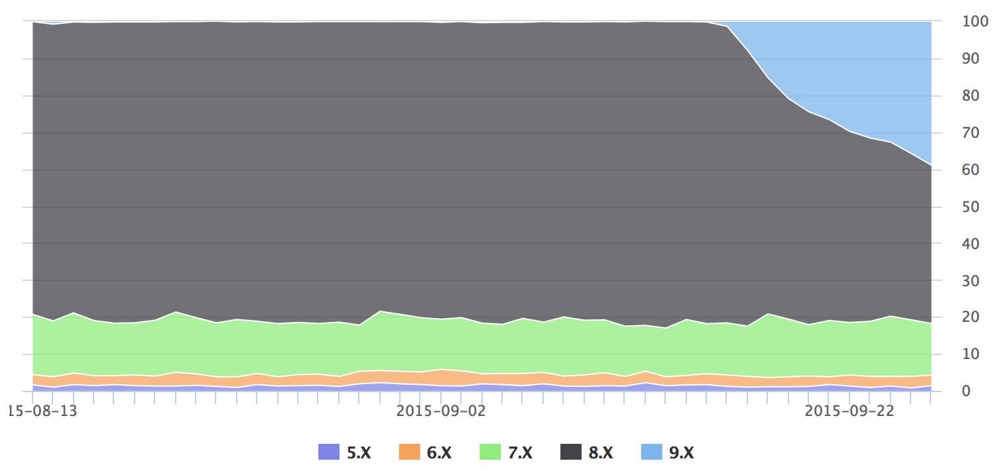

Android
Och utveckling för mobila enheter
Idag
- Android!
- App-struktur
- Utvecklingsmiljön Android Studio
Android!
- Mobilt operativsystem
- 1,6 miljarder aktiva enheter
- 1,6 miljoner appar, mer än 50 miljarder nedladdningar
- Java
- Gratis att komma igång med!
Android, Augusti 2012
Android, 7 september 2015
iOS, Augusti 2012

iOS, 24 september 2015
App-struktur
AndroidManifest.xml-
res/layout/drawable/values/
src/
AndroidManifest.xml
Styr appen internt och externt.
res/
Bilder, ljud, vyer, mm.
Qualifiers
drawable/drawable-hdpi/drawable-ldpi/layout/layout-sw600dp/values/values-swevalues-fr-rBEvalues-en-hdpi
Dåligt

Bra!

// Ladda in bakgrund för skärmen från en drawable resource
getWindow().setBackgroundDrawableResource(R.drawable.my_background_image);
// Ladda in vyn main_screen
setContentView(R.layout.main_screen);
drawable/my_background_image.pngdrawable-ldpi/my_background_image.pngdrawable-hdpi/my_background_image.pngdrawable-xhdpi/my_background_image.pnglayout/main_screen.xmllayout-sw600dp/main_screen.xml
layout/
Användargränssnitt för appen
- Skrivs i XML eller grafiskt gränssnitt
-
ViewGroupLinearLayoutRelativeLayoutAdapterView
- Responsivt
Test App
MyActivity.java
// Importer osv.
public class MyActivity extends Activity {
@Override
protected void onCreate(Bundle savedInstanceState) {
super.onCreate(savedInstanceState);
setContentView(R.layout.activity_my);
}
// ...
activity_my.xml
<RelativeLayout xmlns:android="http://schemas.android.com/apk/res/android"
xmlns:tools="http://schemas.android.com/tools"
android:layout_width="match_parent"
android:layout_height="match_parent"
android:padding="@dimen/activity_common_margin"
tools:context=".MyActivity">
<TextView
android:text="@string/hello_world"
android:layout_width="wrap_content"
android:layout_height="wrap_content" />
</RelativeLayout>
strings.xml
<?xml version="1.0" encoding="utf-8"?>
<resources>
<string name="hello_world">Hello world!</string>
</resources>
Appens logik
MyActivity.java
// Importer osv.
public class MyActivity extends Activity {
@Override
protected void onCreate(Bundle savedInstanceState) {
super.onCreate(savedInstanceState);
setContentView(R.layout.activity_my);
}
// ...
Specifierad som appens utgångspunkt (i AndroidManifest.xml).
Vyer och resurser
activity_my.xml
<RelativeLayout xmlns:android="http://schemas.android.com/apk/res/android"
xmlns:tools="http://schemas.android.com/tools"
android:layout_width="match_parent"
android:layout_height="match_parent"
android:padding="@dimen/activity_common_margin"
tools:context=".MyActivity">
<TextView
android:text="@string/hello_world"
android:layout_width="wrap_content"
android:layout_height="wrap_content" />
</RelativeLayout>
strings.xml
<?xml version="1.0" encoding="utf-8"?>
<resources>
<string name="hello_world">Hello world!</string>
</resources>
Laddas av dina Java-klasser.
Labben
To Do-lista